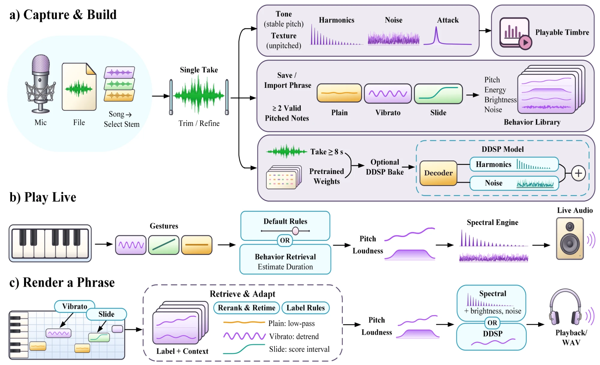
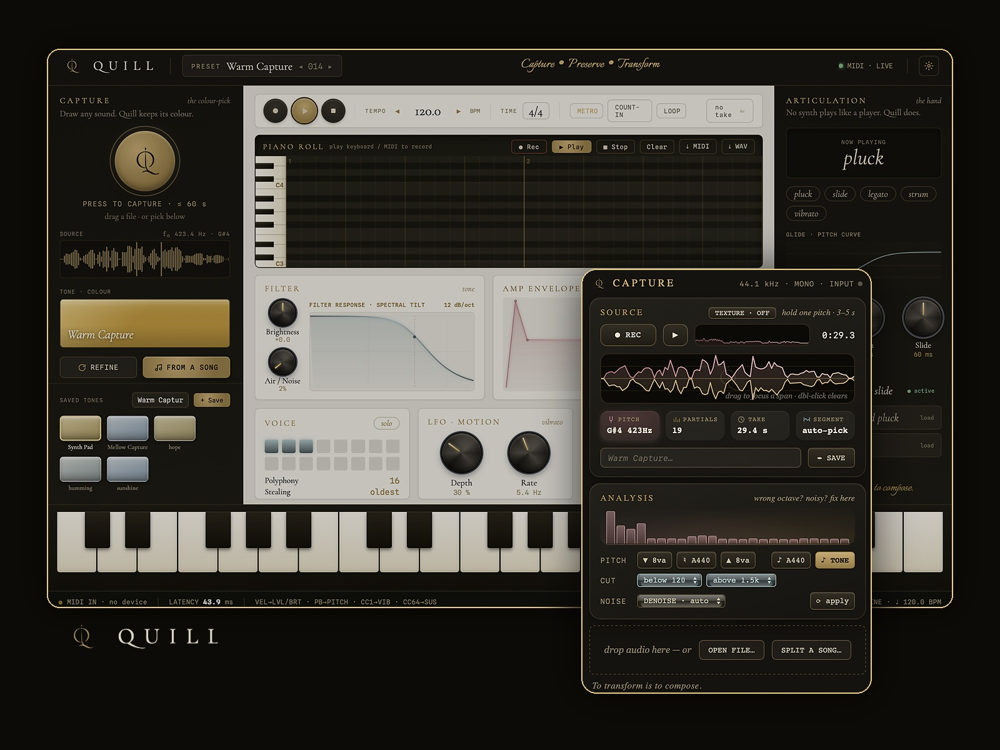

Play a wine glass with a violinist’s vibrato, or a trumpet with a guitarist’s slides.
Demo video · ISMIR 2026 Late-Breaking Demo
Quill separates a short monophonic recording into two independent, reusable assets: a timbre and a note-level behavior library, so that how an instrument sounds and how it is played can be mixed and matched. A MIDI melody can pair any library with any compatible timbre without retraining. I designed and built it on my own as a desktop instrument with real-time MIDI input and one-click behavior capture.
A recording stores an instrument’s sound and one performance together, and a sampler replays it. Timbre transfer is driven by live audio, so its expression cannot be redirected to new notes. MIDI-DDSP generates expression inside a model, for the instruments in its training data. I have not found a system that stores a way of playing as an asset that a new melody can reuse with a different sound.
Twelve clips of one folk melody: three timbres (violin, trumpet and rubbed glass) by four behavior sources. Timbre is fixed along a row. Behavior is fixed down a column.
Outlined cells use the timbre’s own behavior. The clips are pre-rendered.
Spectral timbre (real time). PESTO estimates f0. On an STFT I measure up to 60 harmonic amplitudes per frame by parabolic peak interpolation and store the residual as a 40-band noise envelope. An additive synthesizer written in NumPy and Numba resynthesizes the sound from MIDI and resamples the spectral envelope at the target harmonics, which preserves formants under transposition. Sixteen voices render a 256-sample block in a median of 2.65 ms (budget 5.8 ms, Apple M2).
Neural timbre (offline). Each instrument can have a DDSP harmonic-plus-noise model. An MLP and GRU decoder with 494,718 parameters maps f0 and loudness to 60 harmonic and 65 noise-band amplitudes at 16 kHz.
Behavior library. pYIN tracks f0. Note boundaries are the union of detected onsets and f0 steps. Rules on the pitch contour label each note plain, vibrato or slide. Each note stores four 48-point trajectories (pitch deviation, energy, brightness, noisiness) and six context features: pitch, duration, the gaps before and after, and phrase-initial and phrase-final flags.
Retrieval and rendering. For each MIDI note, articulation-conditioned nearest-neighbor retrieval filters entries by label and selects the one with the smallest Euclidean distance over the standardized context features. Its trajectories are resampled to the note duration, adding or removing whole vibrato cycles to keep the recorded rate. Pitch deviation sets f0 and energy modulates loudness. The two assets exchange only these two signals.

In the app. Live playing uses the spectral synthesizer with optional real-time behavior retrieval. Rendering and WAV export can use the DDSP model.

Cross-rendering violin, trumpet and guitar passed 12 of 12 source-attribution checks: pitch-modulation features followed the behavior source and MFCC features followed the timbre source. In a pre-registered study with 19 listeners, all 19 rated retrieved behavior more human-like than no behavior, and 109 of 114 cross-instrument ABX responses identified the behavior source. Changing a note’s label from plain to vibrato raised median vibrato-band energy 7.0 times in the control signal and 4.7 times in the audio (29 notes). The glass timbre model and its 24-note library were both built from about 82 seconds of recordings.
Naturalness is the main limitation. MIDI-DDSP was rated more natural (median 5 against 4, on different melodies). On one melody, 16 of 19 listeners rated a parametric vibrato model more natural than retrieval. Quill connects notes that the player detached: the loudness dip at a note change has a median of 10.9 dB in the violin recordings and 6.6 to 8.0 dB in Quill’s renders. Retrieval has no condition for note connection. Sources must be pitched and monophonic, and the neural output is 16 kHz.
ISMIR 2026 Late-Breaking Demo · Abu Dhabi, UAE
The demo paper covers the method and the listening study. The source code includes the reproduction scripts.